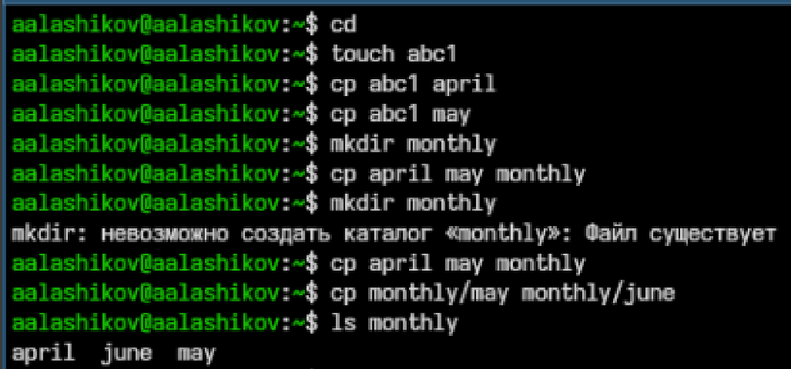
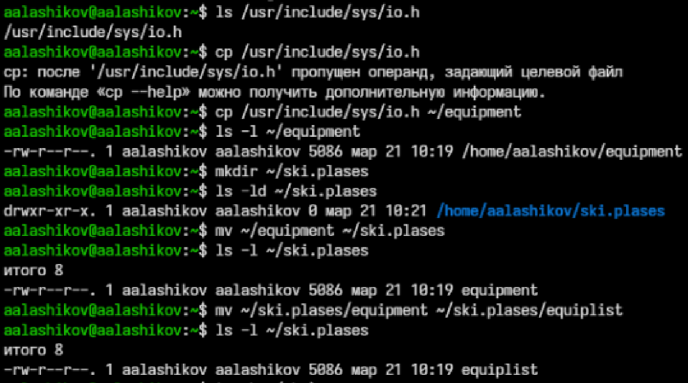
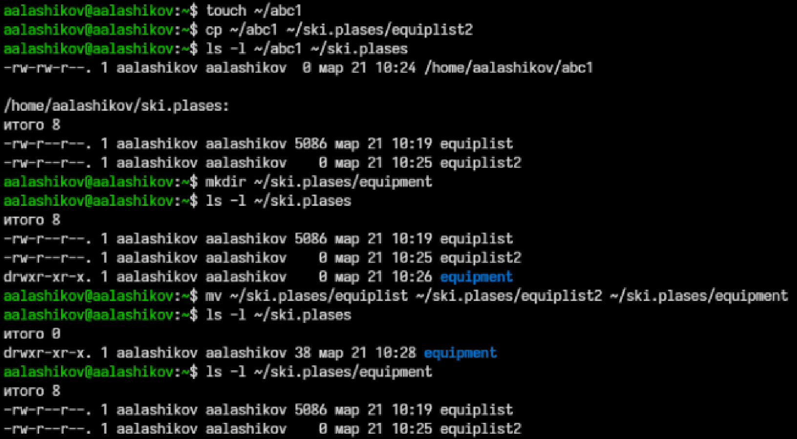
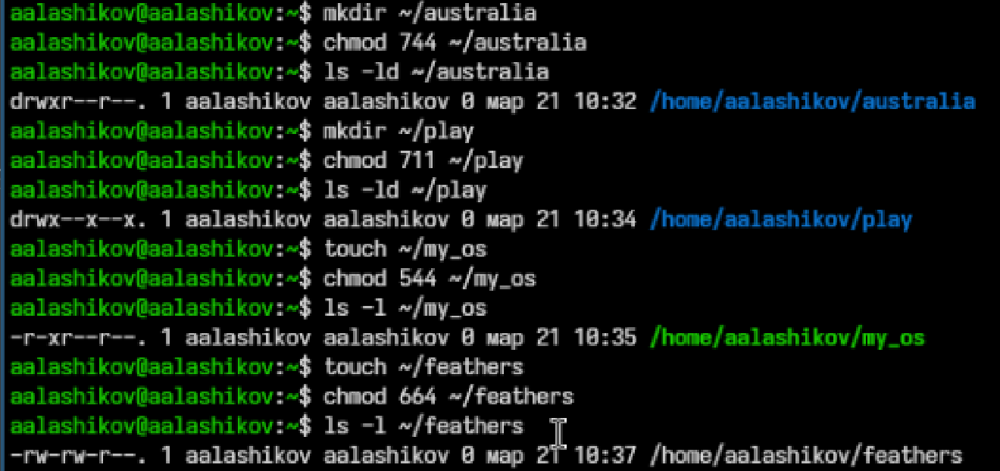
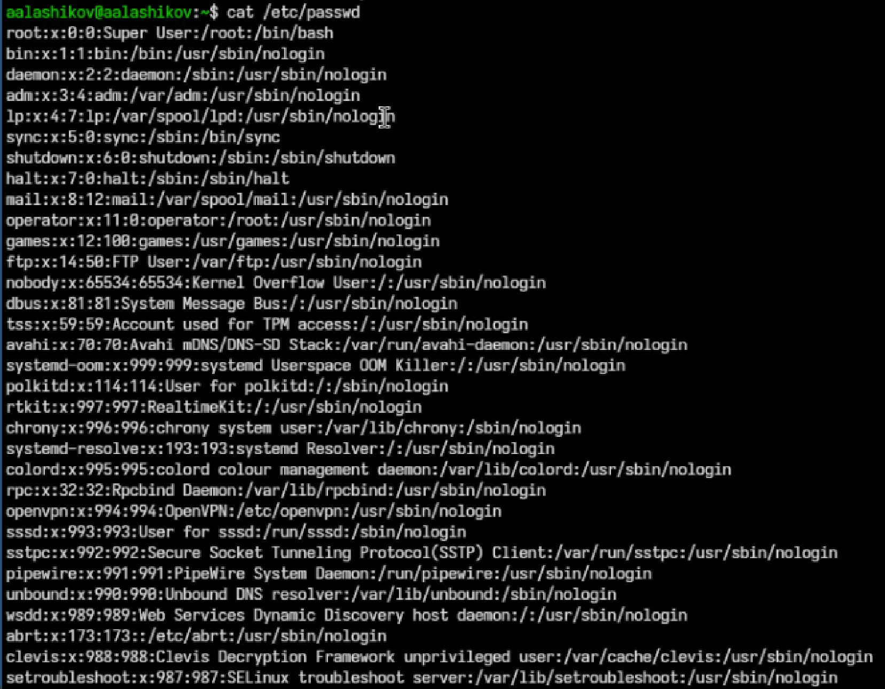
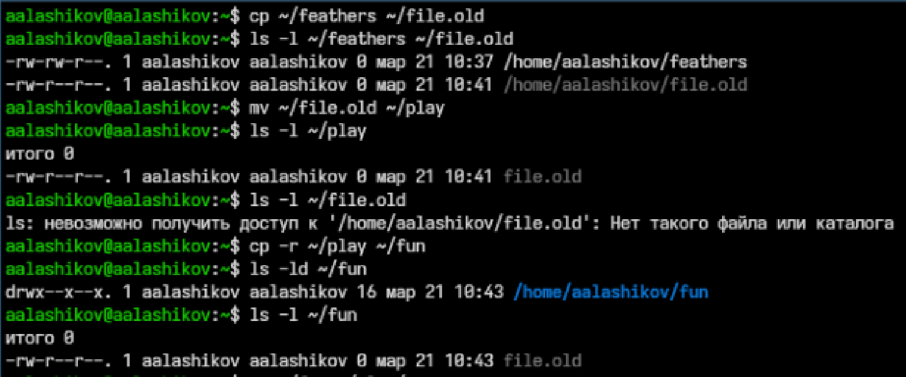
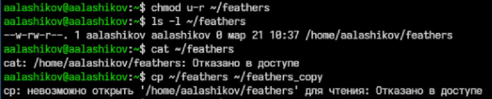
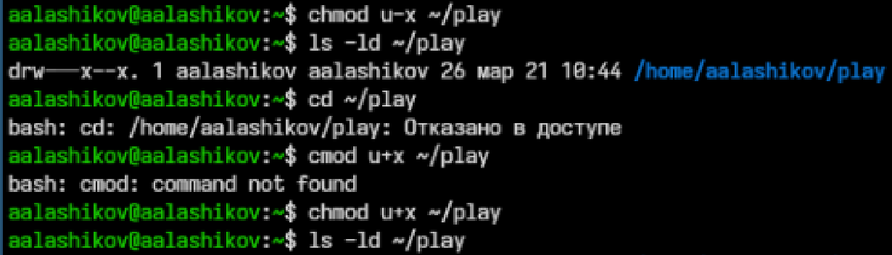
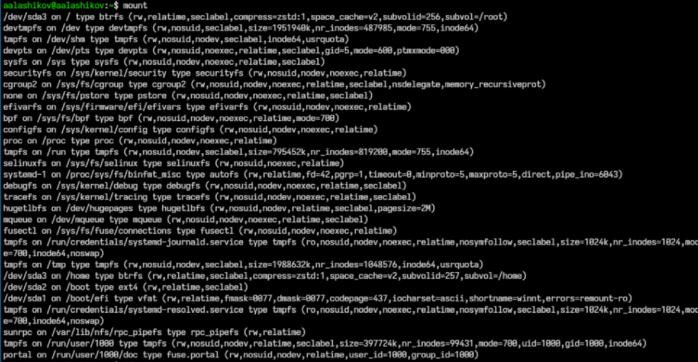
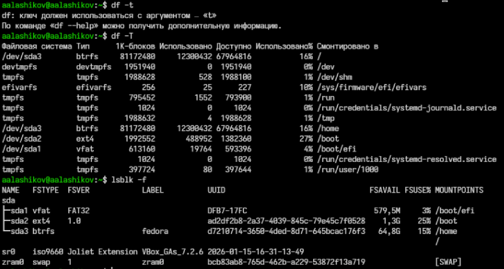

Лабораторная работа №7
Анализ файловой системы Linux. Команды для работы с файлами и каталогами
Российский университет дружбы народов, Москва, Россия
2026-03-18
Докладчик
- Лащиков Алексей Антонович
- Студент группы НКАбд-04-25
- Российский университет дружбы народов им. П. Лумумбы
- 1032253527@rudn.ru
- https://alexeylashikov.github.io/

Цель и задачи
Цель: изучить структуру файловой системы Linux и получить навыки работы с файлами, каталогами и правами доступа.
Задачи:
- выполнить примеры из методички;
- отработать команды
cp,mv,mkdir,ls,cat; - изучить изменение прав доступа через
chmod; - проверить влияние прав на работу с файлами и каталогами;
- рассмотреть команды
mount,fsck,mkfs,kill.
Краткая теория
Файловая система Linux хранит данные в виде файлов и каталогов, объединённых в дерево с корнем /.
Для работы с файлами и каталогами используются команды:
touch,cat,less;cp,mv,mkdir,ls;chmodдля изменения прав доступа.
Права r, w, x задаются для владельца, группы и остальных пользователей.
Права доступа
Основные права в Linux:
r— чтение;w— запись;x— выполнение.
Для каталогов право x означает возможность входа в каталог, а право r — просмотр имён объектов внутри него.
Права можно задавать:
- символьной формой, например
chmod u+r file; - цифровой формой, например
chmod 744 dir.
Команды анализа файловой системы
Для анализа файловой системы использовались:
mount— показывает подключённые файловые системы;df -T— показывает типы файловых систем и использование места;lsblk -f— показывает разделы, типы ФС и точки монтирования.
Также была изучена справка man для команд mount, fsck, mkfs, kill.
Выполнение примеров из методички
Сначала были выполнены примеры из первой части лабораторной работы.

Рисунок 1: Выполнение примеров из первой части лабораторной работы
Работа с файлами и каталогами
На основном этапе лабораторной работы был скопирован файл /usr/include/sys/io.h в домашний каталог под именем equipment.

Рисунок 2: Копирование файла и создание каталога ski.plases
Формирование структуры каталогов
Далее был создан файл abc1, скопирован в каталог ~/ski.plases под именем equiplist2, а затем оба файла были перемещены в каталог ~/ski.plases/equipment.
После этого каталог newdir был перемещён в ~/ski.plases и переименован в plans.

Рисунок 3: Создание структуры каталогов и перемещение файлов
Настройка прав доступа
Для объектов были заданы требуемые права доступа с помощью команды chmod:
australia—744play—711my_os—544feathers—664

Рисунок 4: Назначение прав доступа объектам
Просмотр системного файла
На следующем этапе было просмотрено содержимое файла /etc/passwd.
Этот файл содержит сведения о пользователях системы: имя пользователя, идентификаторы, домашний каталог и командную оболочку.

Рисунок 5: Просмотр файла /etc/passwd
Копирование и перемещение объектов
После этого файл ~/feathers был скопирован в ~/file.old, затем перемещён в каталог ~/play.
Далее каталог ~/play был рекурсивно скопирован в ~/fun, а затем перемещён в ~/play под именем games.

Рисунок 6: Копирование и перемещение файлов и каталогов
Проверка влияния прав доступа
У владельца файла ~/feathers было снято право на чтение.
После этого:
- команда
cat ~/feathersзавершилась ошибкой; - команда
cp ~/feathers ~/feathers_copyтоже завершилась ошибкой.
Это показало, что без права r файл нельзя ни просмотреть, ни скопировать.

Рисунок 7: Влияние снятия права чтения у файла
Возврат прав доступа
Затем владельцу файла ~/feathers было возвращено право чтения.
Также у каталога ~/play временно было снято право выполнения x, из-за чего переход в каталог стал невозможен.
После возврата права x доступ в каталог восстановился.

Рисунок 8: Изменение прав у файла и каталога
Файловые системы на компьютере
По результатам выполнения команд mount, df -T и lsblk -f было установлено, что в системе используются:
btrfs— основная файловая система;ext4— для раздела/boot;vfat— для раздела/boot/efi;swap— область подкачки.
Результаты команды mount
Команда mount показала список всех смонтированных файловых систем и параметры их подключения.
По выводу команды видно, что:
/dev/sda3смонтирован в/и/home;- тип файловой системы для этих точек —
btrfs.

Рисунок 9: Вывод команды mount
Результаты команд df -T и lsblk -f
Команды df -T и lsblk -f подтвердили структуру разделов:
/dev/sda3—btrfs/dev/sda2—ext4/dev/sda1—vfatzram0—swap

Рисунок 10: Вывод команд df -T и lsblk -f
Изученные команды
В завершение были изучены команды:
mount— подключение файловых систем;fsck— проверка и исправление ошибок;mkfs— создание файловой системы;kill— отправка сигналов процессам.
Выводы
В ходе лабораторной работы были изучены:
- операции с файлами и каталогами;
- изменение прав доступа через
chmod; - влияние прав на чтение файлов и доступ к каталогам;
- базовые команды анализа файловой системы Linux.
Также был выполнен анализ файловых систем компьютера, на котором выполнялась работа. Цель лабораторной работы была достигнута.